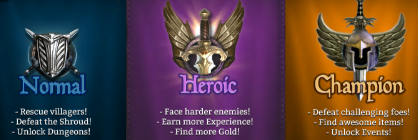

Pályák
Az általános pályáknak 3 különböző nehézségi szintje van: Normal, Heroic, Champion. Kis szinten egyedül a Normal vihető ki könnyen, utána már könnyebb csapatban tovább haladni. Addig nem kezdhető el a Heroic pálya míg nem teljesítettük az össze Normal pályát legalább egyszer. Ha az összes Normal-on végig mentünk akkor nyílik meg a Heroic szint és emellett a Dungeon is. Így van ez a Campion pályával is csak akkor használható ha az összes Heroic-on végig mentünk. A Champion pályák végeztével nyílik meg az Event. Érdemes mindent felvenni amit az adott pálya dob, még ha nem is jobb, mint az éppen használt felszerelés, és a városba visszaérkezve eladni azt, így növelve az arany mennyiséget. Ha elég pénzünk van akkor a felvett tárgyakat össze is lehet kovácsolni így eggyel nagyobb szintű tárgyat tudunk készíteni. Ha teljesítünk egy pályát akkkor nő a teljesítettségi szintje, ezenek összesen 5 szintje van, az els 4 elérésénél 5 gyémántot kapunk jutalmul, az utolsónál viszont 50 darabot. Mindegyik végén egy főgonoszt kell legyőzni ahhoz, hogy teljesítsük az adott pályát. Az első 5 nam ad ajándék csomagot azonban a következők után már jár, ez minden a 3 szinten más, Championon kapható a legjobb láda ami kapható.
Tournament
2 heti rendszerességel van megrendezve, minden egye második héten más felszerelést kaphatunk általa. A lényege: 9 pályát kell teljesíteni, ez négy nehézségi szinten érhető el: Bronze, Silver, Gold, Platinum, ezek közül a Bronze event felszerelések nélkül is teljesíthető, a Silverhez legalább Silver event tárgyak kellenek, a Gold és a Platinum teljesítéséhez vagy egy erősjátékosra van szükség akinek meg van az össze Gold ruhája, vagy pedig csapatban kell megpróbálkozni vele. Ahhoz, hogy egy pályát el lehessen indítani, szülség van Valor Tokenre, ez a belépő, amiből 10 darabra van szükség. A maximum belépő 30 darab, és ez idővel újratölt, ha lenullázod. A pálya telejsítése után 3 dobozt kapunk, amiket ki lehet nyitni, tartalmaznak tapasztalat pontot, az adott karakternek a képességeihez rúnát, illetve egy ékszert. Az utóbbi tartalmazza a legfontosabbat, a spaciális köveket, amiket ideális esetben meg is kapunk a kinyitása során. A rendszer lényege, hogy össze kell gyűjteni mind a 9 követ, ezeket Level 5-ös szintre kell húzni és ezek után vehetõ ki érte speciális nyeremény. Ezeket többször is igénybe lehet venni. A nyeremények: zászló, öv vagy trófea lehet, ami váltakozik 2 hetente. Egy nyeremény kiváltása során kapunk mellé még Merit Coinokat, amibõl lehet venni akár 30,6%-os gold find-os félhold követ.
Event
2 heti rendszerességel van megrendezve, minden egye második héten más felszerelést kaphatunk általa. 4 nehézségi szint van: Silver, Gold, Platinum, Elite. Minden második héten a power szintek emelkednek, így a pályák teljesítése során a felszerelésekben is nő a power, de az a minimum power is amivel elindíthatók a különböző szintek.